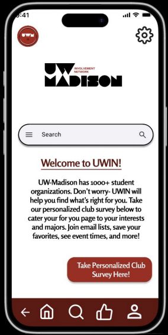

My Work
UW-Involvement App
Project Overview: This app is designed to help students explore and join clubs at UW-Madison efficiently.
| Purpose | Description |
|---|---|
|
|
More details available here: View Presentation